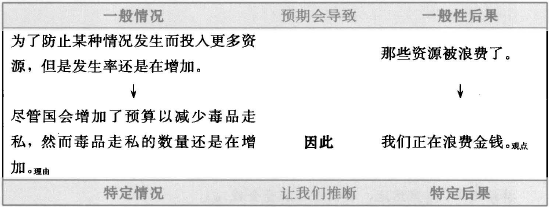
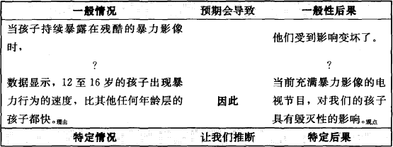
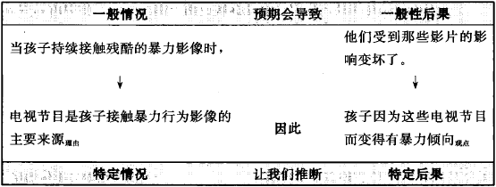

本章讨论的议题是有关理由和观点之间的逻辑关联，其复杂性远超过你想面对的，对初学者而言更是如此。然而，从长远来看，每位研究者都应努力了解这个议题。
研究者应该为读者提供最好的理由，而这些理由有足够的且可以取得的证据为基础。不过，就算读者接受研究者的理由，假如他们认为研究者的理由和观点之间毫无关联，他们仍会难以接受研究者的观点。我们以论证的第五个要素——论据（warrant），来说明及示范理由和观点之间的关联性。
论据，有时候我们称之为平常的事物（commonplace），是一种关于这个世界的常识概括，而每个人都将其视为不证自明的，如“无风不起浪”。但是有些论据对于特定团体是非常明确，以至于形成该团体特殊的思维习惯，如“不同物种的生物几乎很少有相同的染色体，我们因而可以下结论，它们比那些拥有较多相同染色体的生物会更早地发生演化”。如同所有的平常事物和思维习惯，有些时候我们会清楚地阐明，但更多的时候我们认为那是理所当然。
在本章中，我们将说明论据如何解释推论，如何知道什么时候必须陈述论据，以及如何提出论据并加以检验。不过，首先要注意的是：在论证中，我们在理解和处理时，论据是最抽象、最困难的要素。每位读者都努力地想理解，修辞学的学者也热烈地讨论。所以，假如读到本章结尾，你还是搞不太清楚的话，那也不要紧，因为并非只有你才会如此（本书的三位作者也经常如此）。
假设你的朋友提出下面的论证：
尽管国会增加了预算以减少毒品走私，然而毒品走私的数量还是在持续增加。理由显然地，我们正在浪费金钱。观点
你的回应是：
尽管提高了预算来预防走私，但是走私仍旧在增加。为什么上述事实意味着我们正在浪费金钱？我不了解这个推论结果是如何产生的。
你的朋友为了说服你接受支持他观点的理由，必须以一般性原理来解释为什么这个理由支持他的观点。他的原理可能会包含两个部分：一般情况（general circumstance），以及随着一般情况而产生的一般性后果：
当投入更多资源以防止某种情况发生，但该情况的发生率还是在持续增加时，一般情况那些资源就浪费了。一般性结果
如果你接受一般性原理（也可能不接受），就应该接受“该情况下的任何特定实例（specific instance）”和“该后果的任何特定实例”之间的相同关系。如果你接受“一般性后果是由一般性情况推导而来”，也就应该接受“特定后果是由特定情况推导而来”。
我们用下面的表格呈现论据如何“涵盖”理由和观点：

箭头（↓）的标志是指我们认为：
假如论据和理由是正确的，而且理由和观点是论据的恰当例子，那么观点就必定是正确的。当然，如果你不接受论据的一般原理是正确的，那么论据也不会“产生作用”。如果那样的话，你的朋友要么就举个实例来说服你接受，要么就另外找一个你可以接受的论据。
通常作者提出论据是为了连接理由和观点，这便是我们在这一章要聚焦讨论的。不过，你也可以提供论据说明证据如何和理由产生关联。既然理由是次要观点，正如论据将一个观点连接到支持观点的理由那样，它也将一个理由连接到支持该理由的证据。
实际上，撰写研究报告者会用许多方式来陈述论据，从直截了当到迂回的方式都有：
如果问题持续下去，投入在预防上的资源便被浪费了。
花了钱没有收获是一种浪费。
如果你仍然需要治疗，那么再少的预防都是浪费。
不管通过什么方式陈述，论据总是包含两个部分：一是一般情况，另一个是读者据以推想的一般性后果。这两个部分可以是有因果关系的（如，下雨造成街道潮湿）、某件事为另一件事的征兆（如，礼多必诈）、一种行为的规则（如，过马路前要先看清楚左右两边）、一种定义（如，具有三个边的图形就是三角形）、一个推理的原则（如，充分的代表性数据是任何可靠的推论所必需的），或者是任何其他连接条件和结果的原理。
陈述论据的方式是最有用的，因为它可以清楚地区分论据具备的两个必要部分：
如果当X时，则Y。
这个公式帮助研究者检验一个特定条件和一个特定后果之间的关联。接着研究者便可以根据自己的喜好来重新陈述这个论据。
研究报告涉及无数项推理的原则，这些推理的原则大部分深深地嵌在我们的各种假如和知识中，而我们也从不加以质疑。这也就是为什么研究者只在他们认为读者可能会质疑理由和观点之间的关联性时，才会去陈述他们的论据。我们来仔细地看看下面这三个案例：
在这种情况下，明确地陈述这个论据，然后为之辩护，最好提及使用这些原则或为之辩护的权威人物。研究者不可能说服那些坚持反对立场的人，但至少承认自己的立场是有争议的，同时表示采取这个立场的并非只有研究者一人而已。
如果你以某领域专家的身份为非该领域专家的读者撰写文章，找出你使用专家才会使用的理由的地方。如果理由背后的原则只有专家才了解，就用一个论据来加以说明。大体来说如果读者熟悉你的论证类型，那就找出你使用的令人惊奇的或不常见的推理方式的地方。即使读者接受某种非传统的推理原则，你也可以明确地陈述论据和为之辩护的方式，以此来化解他们的部分抗拒。
在这种情况下，写出预期读者会抗拒的理由和观点之前，先用你认为他们可能会接受的论据作为开头。读者可能不会因此而变得比较喜欢你的观点，但是你至少迫使他们发现他们的抗拒是不合逻辑的。例如：
同性恋必然有强而有力的遗传要素，观点因为那些从未和同性恋者接触而长大后成为同性恋者，在他们还是儿童时候，他们的情绪和行为就呈现出许多同性恋者的特性。理由
有些读者抗拒该观点，因为他们相信性倾向是一种自由意志，但是同性恋的任何遗传学根据，都可能削弱他们对同性恋在道德上的反对立场。作者可能无法战胜这些人的强烈信念，但假如该作者有充分的证据支持该理由，而且作者一开始先说服读者接受连接理由和观点的论据，那么他就可以促使读者思考该观点：
当孩子们表现出来的行为不是来自教导或模仿，而是源于自发性时，那么该行为就有遗传的基础。论据因此，同性恋一定有强而有力的遗传要素，观点因为……理由
如果读者认为论据和理由都是正确的，而且该特定的理由和观点是论据的好例子，他们在逻辑上就不得不接受该观点。如果他们不这么认为的话，研究者便没有任何合理的论证可以改变他们的想法。
你所不想说的内容反映你是什么样的人
研究者提供自己专业领域中的论据为读者解释他们不了解的原则，这是研究者体贴读者的表现。但是当研究者对于自己能陈述的论据保持沉默时，那同样是一种强势的姿态。论据清楚地表达出推理的原则，形成一个研究团体的智力结构（intellectual fabric）。所以，当研究者对领域中专有的论据避而不谈时，便将不知所以的读者排除在外，并暗示自己是个博学的内行人。论据以某种方式显著地影响着读者如何察觉研究者的学术风范。
当读者强烈地抗拒你的观点时，要假如他们可能会挑战你的论据。思考下列这个小论证：
不同于一般的看法，我们相信在19世纪前半叶或更早，枪支拥有权在美国很少见，观点因为在他们的遗嘱中极少提及枪支。理由回顾1750年至1850年这段时间，美国的七个州共有4465份遗嘱，但只有11%的内容提及长枪或手枪……报告证据
你可以预期有些人会拒绝接受这个观点，这些人对美国的印象包括从革命前延续下来的普遍的枪支所有权。他们即使接受遗嘱中极少提及枪支的事实，他们依然反对：为什么“在遗嘱中极少提及枪支”的事实是相信很少有人拥有枪支的理由？
如果作者能预期该反对的理由，他可以用这样的论据作为开始：
在18世纪和19世纪，人们习惯地将大部分家用物品列在遗嘱中，尤其是贵重物品，如枪支。所以如果在遗嘱中没有提及某类物品，很可能他就从未拥有过该物品。
然而，当研究者陈述该论据时，应该反问自己三个问题：
如果读者认为研究者的论据有误，那就没有任何理由和证据足以挽救研究者的观点。
非人类的生物不过是没有任何内在精神生命的生物体，所以不用去怜惘或关心它们。论据用于医学实验的类人猿，没有类似于人类情绪或感觉的经验，理由所以我们不应该浪费经费使它们更舒适。观点
半个世纪以前，大部分的心理学家都认为这个论据是正确的，但现今绝大部分的心理学家却不这么认为。
一个论据可能基本上是正确的，但是被描述得过于广泛，例如，上述有关枪支所有权的论据即缺乏限制或界限：
在18世纪和19世纪，家用物品通常被列在遗嘱中。
此种说法语气太强硬，退一步来描述，可能比较容易被接受：
在18世纪和19世纪，那些被认为是贵重的家用物品，通常被列在遗嘱中。
这些检验同时可应用在需要产生论据的时候。一个好的原则是提出比理由和观点稍具概括性的论据。避免使用这些字眼，像每个人（everyone）、所有（all）、从未（never）、和总是（always）。理由和观点是一般性的陈述，对于论据的形成是个挑战。在这种情况下，论据必须更具有普遍性。例如：
占星术的信念会抗拒逻辑性的论证，观点因为人们倾向于记住预言和日常生活事件的随机巧合，却无法记住更多失败的预言。理由
在“当X时，则Y”的形式中，我们可以借由重述特定理由和观点而提出论据：
如果人们清楚地记住占星术的预言和日常生活事件之随机巧合，而无法记住更多失败的预言，理由的部分他们对占星术的信念就会抗拒逻辑的论证。观点的部分
我们同时修正两个部分以使论据更具有普遍性：
当人们把一个明显的巧合事件当做普遍现象时，理由的部分他们并没有进行合乎逻辑的思考。观点的部分
事实上，论据是科学决策的一项重要原则，但在任何时候、任何情况不都是正确的吗？如果不是，那将会有例外情形出现，这不但让读者拒绝你的论据，也拒绝你的整个论证。
对论据的检验所涉及的议题，逻辑学家和修辞学家的争论已经超过2000年了：论据如何有效地连接理由和观点？当你的理由和证据有误时，你可以修正它们；而当它们不清楚时，你可以厘清它们。但是当有人说研究者的观点缺乏论据（unwarranted），或用拉丁文的说法是“与前提无关的不合理推论”（non sequitur）的时候，你就必须分析自己论证的逻辑。这里有一个简单的例子：
A：你应该买把枪，因为你一个人住。
B：为什么我一个人住，就表示我应该买把枪？
A：不管何时，当你住在不安全的环境时，你应该要保护自己。
B：但是我一个人住不代表我的生活是不安全的。
B抱怨，A提出的理由不是一个好案例，至少对她来说，自己一个人住并非不安全的例子。
但是要检验其他的论证会比较困难。举例来说，这里有一个关于充满暴力影像的电视节目对儿童的影响的论述，其论证有微妙的缺陷（我们要提醒你，密切注意下面的内容）：
几乎没有人会怀疑，当我们让孩子接触勇敢和慷慨的模范时，我们可以影响他们，让他们变好。既然这样，我们如何能否认，如果他们持续接触残酷的暴力影像时，不会受到影响而变坏？论据数据显示，12至16岁的孩子出现暴力行为的速度比任何其他年龄层的孩子都快。理由布朗（1997）指出……，证据我们再也不能忽视此结论：当前电视节目的暴力影像，即使以卡通的形式呈现，也会对我们的孩子产生毁灭性的影响。观点
为了判断错误在何处，我们将论据拆解成两个部分，然后将理由和观点列在下面。

现在我们理解特定情况并非一般性情况的例子：“出现暴力行为”不是“孩子持续接触暴力影像”的一个例子。同样地，特定结果不是一般性结果的好例子：“电视节目的暴力具有毁灭性”，并非是“对孩子有比较不好的影响”的例子，因为它太特定（specific）了。所以，即使所有的陈述都是正确的，这也不意味着论证的正确，因为该论据既没有涵盖理由，也没有涵盖观点。
为了修改论证，我们就要修改理由和观点以符合论据（或使论据符合理由和观点）：
几乎没有人会怀疑，让孩子接触勇敢和慷慨的模范可以影响他们让他们变好。既然这样，我们如何能否认如果他们持续接触残酷的暴力影像时，不会受到影响而变坏？论据数据显示12至16岁的孩子出现暴力行为的速度比其他任何年龄层的孩子都快。理由许多因素导致了这些暴力行为，然而我们不能忽视此结论，因为电视节目是孩子接触暴力行为影像的主要来源，理由他们因为这些电视节目而变得有暴力倾向。观点
这个证据和观点似乎比较接近论据：

但是，一个强烈想要推倒论证的读者，可能还是会反对：
等一下！事实上，你的理由并不符合你的论据。暴力行为的影像的确在电视节目中出现，这是事实，但是，读者不相信那些影像是“残酷的”。许多暴力行为的影像是卡通化的。因此，你的论据无法涵盖你的理由，因为你的理由并非你论据的好例子。进一步看，你的观点——“变得有暴力倾向”——比“受到影响，变坏了”更极端。它太特定了，远超过你的论据所支持的观点。
我们说过，这不是件容易的事。
法律系的学生有一门令他们痛苦的课程，就是学习做出法律论证（legal argument）。他们发现有许多我们大多数人相信的普通论据，在他们法律推理的领域里却没有容身之处。例如，他们刚进入法学院时，如同我们多数人一样，抱有常识的看法，我们可以用论据形式陈述如下：
当一个人对另一个人做出不公平的事情时，法律机关应该加以纠正。
但是法律系的学生必须舍弃这种常识性的论据，因为其他的论据可能更有力。例如，
当你没有履行法律上的义务时，即使是不小心的，你也必须承受后果。
更特定地，
当老年人忘了交房产税时，别人可以买下他们的房子交回税金，并把他们赶出去。
虽然违背他们高尚的本性，但法律系的学生必须学习，所谓的公正并不是我们大多数人希望如何，而是法庭认定如何。
论据帮助研究者了解，为什么重要的议题会被无休止地争论：为什么当研究者觉得自己有一个无懈可击的论证时，读者还是会说，等一会儿， 关于……你的证据认为……我不同意。
甚至更麻烦的是，读者可能会提出相对立的论据：
当工会想要表达他们的政治观点时，他们在宪法保障下有权这么做。地方教师工会相信房产税应该被提高，因此他们有权利参加校务委员会会议表达意见。
当一个团体没有达成一致意见时，这个团体就不应该表达尚有争议的意见。地方的教师工会并不是每一位成员都认为房产税应该被提高，所以参加校务委员会会议表达意见是不应该的。
我们可以提出什么理由和证据来证明上面的论据？有哪些较高层次的论据可涵盖这些理由？在所有我们与他人不同的意见之中，涉及论据的争议通常是最激烈的。
如果说服读者接受一个新的论据是困难的，那么让他们放弃一个他们相信的论据就更困难了。假如你将论证的证据建立在挑战读者原则的基础上，那么你便要从想象读者会如何防卫你想要挑战的论据开始。例如，一位经济学者可能认为：
应该控制Zackland的人口总数，观点因为人口总数超过资源的承受能力，正朝向灾难前进。理由当人口的增长超过资源时，只有降低人口的数量，才能挽救这个国家免于瓦解。论据
假如某个人挑战这个论据，他可能以经济学的分析来支持自己的看法：
当A、B和C国人口超过其平均数后，每个国家都瓦解了。他们试图借由除人口控制外的所有方法来避免瓦解，但结果并不好。理由当社会人口数超过资源的临界点时，他们唯一可以避免瓦解的方式就是降低人口总数。观点/论据
但是宗教人士可能会用基于道德原则而非经济学原则的论据所支持的观点来挑战该论证：
无论经济的后果是什么，都没什么大不了的。阻止已婚夫妇生育孩子是不道德的。观点当人们被建议要违抗上帝在《圣经》中给我们的旨意时，这个建议就是有罪的。论据
第三个人可能也不同意控制人口的看法，但是他提出了另一种不同的论据：
只要我们重视有限资源的问题，我们就能够解决。
如果问第三个人，什么可以支持这样的论据，他可能会说，“嗯， 我相信事在人为的态度。 这就是美国人处理问题的方式……”最后这个论据并没有数据或宗教信念支持，而是基于文化的情况。这三个不同的论据，各自受到不同的方式支持：经济资料、被揭示的真相、文化传承。如果要挑战这些论据，你必须针对每个论据的特点来挑战它们所支持的论点。
因为论据是建立在根本不同的推论原理上，所以你必须用不同的方法挑战它们。
被要求为一个以经验为基础的论据辩护时，我们得参考日常生活经验或别人的可靠报告。
无风不起浪。
当某些杀虫剂溶入生态系统里时，野生鸟类的蛋壳变得非常脆弱，只有少数小鸟被孵出来，鸟群的数量因此也下降了。
挑战：要挑战上述论证，你有三项选择，三项选择都有难度：（1）找出一些不会被驳斥为特例的反例；（2）挑战他们经验的可靠程度；（3）质疑其证据和论据无关。假如你有好的反例，就选第一种策略。你可以在不直接轻视读者的经验或推理的情况下质疑他。对于另外两种策略，你必须和读者正面交战。
我们相信某些人是因为他们的专业知识、地位，或领袖魅力。
当权威人士X说Y如何时，Y就一定是如此。
挑战：挑战权威是困难的。最轻松也最友善的方法是用下面这个方式辩称：在这方面，权威者不会拥有所有的信息，或此论据超过他主要的专长。最直接的方式是提出不接受他论点的好理由，因为在这方面他并没有什么权威。
这些论据受到定义、原则，或理论体系的支持：
来自数学：当两个奇数相加时，会得到一个偶数。
来自宗教：有了通奸行为，就是有了宗教上的罪过。
来自法律：如果无照驾驶，我们就犯了轻罪。
挑战：当你挑战这些论据时，多半是无关“事实”的。你必须要么就挑战体系（这通常很困难），要么就指出该情况不属于这个论据所涵盖的范围：我在自家用的车道上开车又怎样？
有些论据对一个特定文化的成员来说似乎是常识。有些论据有实际的经验支持，但大多数论据是没有的：
早睡早起，使你拥有健康、财富和智慧。
无论何时，当一个君王想要虐待他的臣民时，他就会这么做。
嘲弄来自另一个文化的人往往是错误的。
挑战：像这样的论据会随着时间而改变，但是过程会很缓慢。你可以挑战它们，但是读者会抗拒你想要改变他们的企图，因为读者会认为这是要挑战他们的文化。
可以把下面的思维模式想成是“后设论据”（meta-warrants），即那些除非应用于特定情况，否则就不具有内容的一般思维模式。我们以此来解释我们的推理：
概括（Generalization）：当许多X的情况具有Y的性质时，则X的特征是Y。
模拟（Analogy）：当X在某些方面像Y时，则X在其他方面也将像Y一样。
因果（Cause-effect）：只有当X发生，Y才发生时，则X可能导致Y。
征兆（Sign）：当Y规律性地发生在X之前、之中或之后，则Y是X的征兆。
挑战：哲学家甚至曾经质疑过这些论据，但是就实际的论证来说，我们仅挑战它们的应用或指出其限定条件：是的， 我们可以将X比做Y， 但是如果……
有些论据是不能挑战的：杰弗逊提出这种类型的论据，他写道：“我们相信这些真理是不证自明的……”
当人们直接感受到一个观点是神所启示的真理时，那个观点就是正确的。
当一个观点和神所教导的一致时，它一定是正确的。
这样的论据不受任何可证实的证据所支持，而是单纯地凭借信仰者的内在确定性。它们是信仰的陈述，不需要论证，也没有证据。
挑战：挑战这些论据没有意义，因为没有任何论证能支持或摧毁它们。你所能做到的最好的方式就是提出一个与其相当的另一种无法争议的替代方案。假如你在收集资料的过程中遇到这种情形，要么就忽略它们，要么就决定从一个完全不同的观点去研究它们：不把它当做一个研究主题，而是把它当做一种对于生命意义的探索。